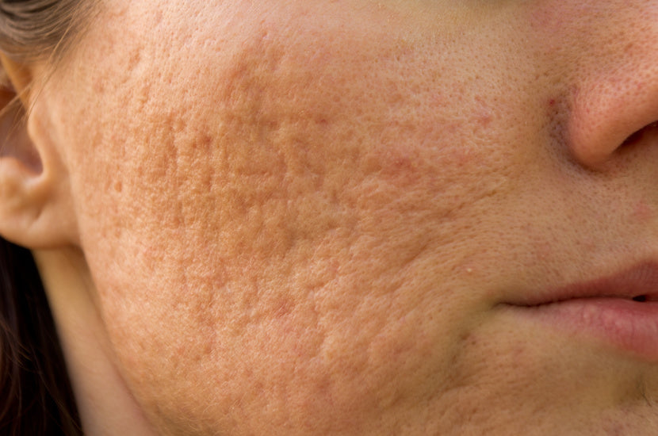
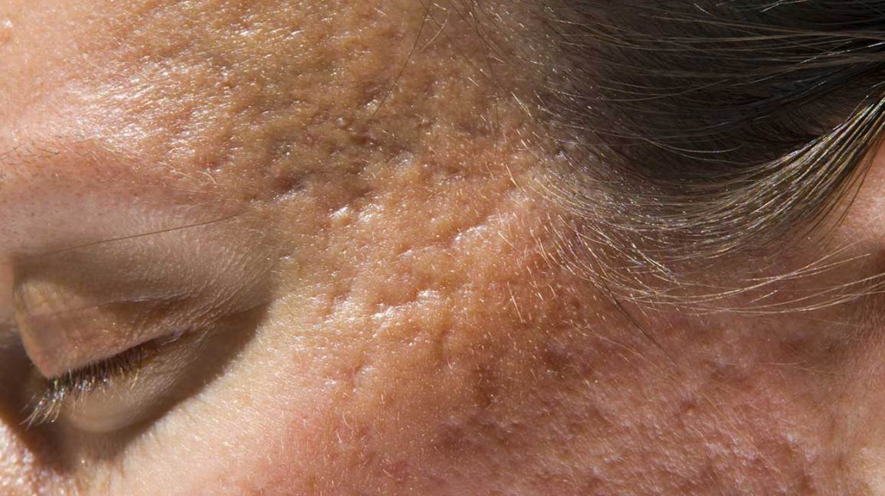

Acne Scars vs. Hyperpigmentation
Today is the day to learn what's real.
Nearly every client that comes to see me for their acne scars don't have any. What they have is post-inflammatory hyperpigmentation. Usually, I have to clarify what they mean by "scars" and re-educate clients on the differences. For many clients, they spend hours researching things themselves on forums like Reddit and social media sites like Twitter, Instagram, and TikTok before seeking the help of a professional. The problem with these mediums is that usually the most popular people providing information in these spaces aren't professionals and conflate terms often. Let's breakdown the differences.
Acne Scars
Acne scars or acne scarring are textural changes in the skin. Usually these changes are identifiable either by indentations in the skin or the appearance of raised or excess skin. These acne scars don't necessarily have to be uniform in shape or size and typically appear on the cheeks but can also appear all over. There are four primary types of acne scars:
- Ice Pick
- Boxcar
- Rolling
- Hypertrophic or Keloid Scars
A client with prominent ice pick scars.
Ice Pick scars are very deep and narrow scars that are sometimes called "pock marks". They appear as tiny indentations in the skin that look as if the skin has been pricked with an ice pick and can extend into the dermis. Sometimes an "enlarged pore" can be a misidentified ice pick scar. These are the most common types of acne scars and can be found all over the face but are most prominent in the cheeks, nose, and forehead. Ice pick scars usually develop as the result of infected or inflamed acne lesions deep within the skin.

Boxcar scars have a broad, box shape with sharply defined edges and tend to give the appearance of "pitted" skin. The depressions in boxcar scars can sometimes cover larger surface area on the face giving an uneven appearance. Boxcar scars develop as a result of collagen loss. This loss of collagen results in a loss of support for the tissue in the area which appears as the sunken depressions in the skin we see.

While rolling scars are very similar to boxcar scars, the primary difference is that there will be a curved or sloping edge. This can sometimes give the skin a wavy appearance or, as some of my clients refer to it, a "cottage-cheese" like texture. These types of scars develop when fibrous bands develop beneath the skin due to a prolonged acne lesion and begin to pull on the epidermis.
Ice pick, boxcar, and rolling scars are all categorized as atrophic scars. That basically means that the scars develop and heal beneath the skin.
A client with two keloid scars present on the cheek and chin.
Hypertrophic or Keloid acne scars are always raised lumps of scar tissue that are also firm in texture. These usually will grow where an acne lesion once was present. Many clients will mistake hypertrophic or keloid scars as active acne but there generally is no acne bacteria present.
Hypertrophic scars will often be the same size as the acne lesions that were present in the area. Keloid scars can grow much larger than the initial acne lesion. Unlike atrophic acne scars which develop due to a loss of collagen or tissue, hypertrophic and keloid scars develop due to an overproduction of collagen and tissue. For these types of scars, our skin does not clearly communicate that a lesion has healed so our bodies will continue to produce collagen and tissue thinking it needs to be healed. These scars tend to be the most difficult to treat.
Treatment for Acne Scars
Having acne scars isn't the end of the world. While some types of acne scars may be more difficult to treat than others, there are options for everyone.
You may need to go through a series of graduated treatments to receive the best results. Chemical peels, microneedling, and microdermabrasion are a few of the services you can see an esthetician for. A dermatologist will be able to provide IPL/laser resurfacing treatments, subcision procedures, fillers, punch excision and punch graft procedures. With either professional, you can start to see improvement in the scar texture anywhere from 3 months- 1 year. Some scars take much longer than others to fade. In some instances, acne scars may not ever permanently go away without the help of an invasive cosmetic procedure.
Hyperpigmentation
Hyperpigmentation (or Post-Inflammatory Hyperpigmentation/PIH) is discoloration in the skin. This can appear as prolonged redness over an acne lesion in fairer skin tones or as brownish-reddish spots and "dark marks" on deeper skin tones.
Hyperpigmentation on a Fitzpatrick IV.
Textured acne scars will tend to be skin colored but may be red or hyperpigmented if active acne lesions are still present. It is possible for both to be present in the same area.
Hyperpigmentation, though it can still be a challenge, tends to be easier to treat than scars. And both estheticians and dermatologists can use the same methods to clear the discoloration as they would acne scars.
TL; DR—acne scars are textured, hyperpigmenation is discoloration. If you've got a question about your face, add yourself to my waitlist to be notified when I'm open for facials and virtual consultations.